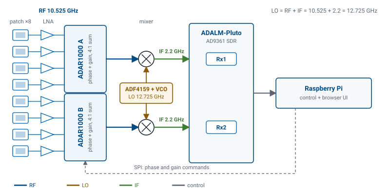
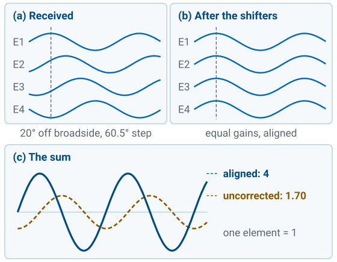
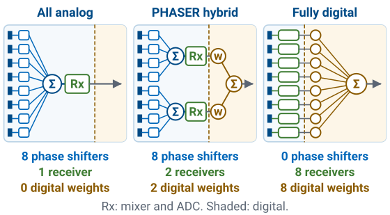
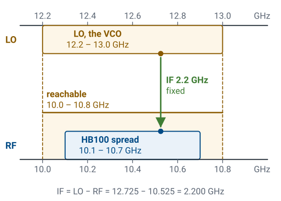
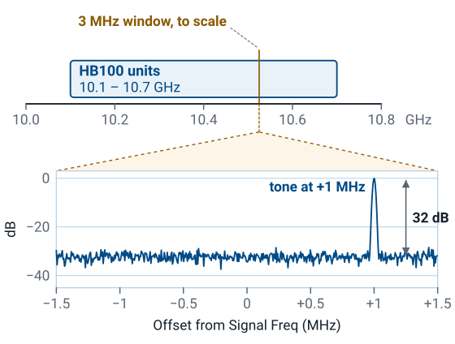
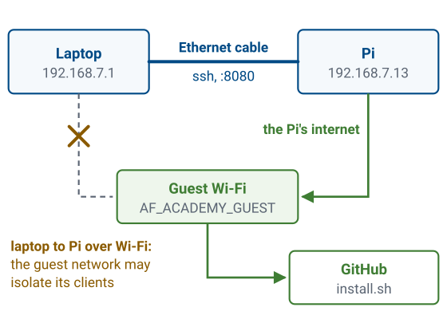

L17 - Introduction to Phased Array Hardware#
Introduction to Phased Array Hardware
The ADALM-PHASER sets the phase and gain of each of its eight elements.
Lesson 17 · Antennas, Phased Arrays, and Radar Systems · Dr. Neil Rogers
Slides
Learning Objectives
- I can identify the hardware architecture of the ADALM-PHASER and control it via SDR software.
Lesson 16 built the array factor by assuming we can hand every element its own amplitude and phase, then add the results. Every result in array theory rests on that assumption, and satisfying it takes real hardware: eight phase shifters, eight attenuators, a summing network, a downconverter, and a computer to command all of it. Today we bring up that hardware in the first hands-on session with the ADALM-PHASER, the 8-element X-band array the rest of Module 3 runs on. By the end of the period you will have brought your kit up from a blank card, found each block on the board, traced a \(10.525\ \text{GHz}\) signal from a patch to a spectrum display, and moved two controls in the browser interface you will use in every lab that follows.
The second objective assumes no receiver course. The page builds the three ideas it needs from scratch: the SDR cannot digitize 10 GHz, a mixer moves a signal to the difference of two frequencies, and the board sets its oscillator so that the difference is always \(2.2\ \text{GHz}\), the one frequency the SDR tunes.
The ADALM-PHASER Receive Chain

The PHASER is a receive array: eight patches capture the wave from a source in front of it.
Everything between the patches and the Raspberry Pi turns eight microwave signals into two streams of numbers.
The frames that follow take the blocks in the figure in order, from the patches to the Pi.
The Patches and the LNAs
Eight patches sit in a row \(d = 14\ \text{mm}\) apart, and their phase differences alone record the arrival angle:
An LNA behind each patch sets the noise figure, because its gain divides down the noise of every later stage.
Eight microstrip patches sit in a horizontal row on the front face of the board, spaced \(d = 14\ \text{mm}\) center to center. Each one is an antenna in its own right with its own element pattern, and the total pattern is that element pattern times the Lesson 16 array factor (pattern multiplication). A wave arriving off broadside reaches the patches in sequence, so element \(n\) differs from element 0 by the geometric phase \(\Delta\phi_n = n\ kd\sin\theta\) of Lesson 16. Preserving that phase difference is the job of everything downstream.
An ADL8107 low-noise amplifier sits directly behind every patch, ahead of any phase shifting or combining. Gain placed first sets the receiver’s noise figure, because the noise each later stage adds is divided by that gain when referred to the input. Phase shifters and power combiners are lossy, so the order here is deliberate.
The rule is the cascade noise figure. For a chain of stages with noise factors \(F_1, F_2, F_3, \ldots\) and available gains \(G_1, G_2, \ldots\), all as linear ratios rather than decibels, the noise factor of the whole chain is
Lesson 12 wrote a receiver’s own noise as an equivalent input temperature, \(T_e = T_0(F - 1)\) with \(T_0 = 290\ \text{K}\). Substituting it stage by stage gives the same rule in temperatures,
so each stage’s noise counts at the input divided by all the gain ahead of it. A passive lossy stage, such as a phase shifter or a combiner, has a noise factor equal to its loss when it sits at the reference temperature \(T_0 = 290\ \text{K}\) (\(F = L\)).
The numbers that follow are illustrative, not datasheet values: an LNA with a \(2\ \text{dB}\) noise figure (\(F_1 = 1.585\)) and \(20\ \text{dB}\) of gain (\(G_1 = 100\)), followed by a beamformer stage with \(10\ \text{dB}\) of loss and so a \(10\ \text{dB}\) noise figure (\(F_2 = 10\)). With the LNA first,
or \(T_e = 196\ \text{K}\). With the lossy stage first, \(G_1 = 0.1\) and
or \(T_e \approx 4300\ \text{K}\). The same two parts in the other order lower the signal-to-noise ratio by \(9.8\ \text{dB}\). The same rule explains step 4 of Part B: the SDR is the last stage, so its own noise counts at the input divided by all the gain ahead of it.
The ADAR1000 Beamformers
Each ADAR1000 applies a phase and a gain to four RF inputs and sums them into one output.
Its 7-bit phase shifter sets the phase in \(2.8125^\circ\) steps.
The GUI’s eight element sliders write registers in these chips.

Two ADAR1000 chips do the beamforming. Each is a 4-channel analog beamformer: it applies a programmable phase and a programmable gain to each of its four inputs at RF, then sums the four into a single output. Each chip sets the phase in steps of
the step size of a 7-bit phase shifter. We will use the gain as a taper in Lesson 25. When the GUI shows you eight element sliders, those sliders are writing registers in these two chips.
In the figure, a wave from \(20^\circ\) off broadside reaches each element \(60.5^\circ\) behind the last; after the phase shifters the four line up and sum to 4, against 1.70 uncorrected.
In degrees,
at \(10.525\ \text{GHz}\). The figure’s step is
and the uncorrected sum of four unit phasors stepped by \(\psi = 60.5^\circ\) is Lesson 16’s array factor with \(N = 4\),
against 4 once the shifters align them.
A progressive phase of one LSB steers the beam from broadside to
That does not confine the beam to a \(0.91^\circ\) grid. Each element’s phase is rounded on its own, so the rounding error varies across the ramp; its main effect is a phase error that raises the sidelobes, which Lesson 26 computes: about \(-42\ \text{dB}\) at 7 bits, far below the sweep’s 23 dB floor.
The Back End
The SDR cannot digitize 10 GHz, so the signal moves down first.
Block |
Role |
|---|---|
2 LTC5548 mixers |
signal × LO; keeps the difference |
ADF4159 + HMC735 VCO |
LO, 12.2–13.0 GHz |
ADALM-Pluto |
digitizes both at 2.2 GHz |
Raspberry Pi |
SPI, |
The SDR that digitizes the array’s output, an ADALM-Pluto, tunes no higher than \(6\ \text{GHz}\), so it cannot take a \(10\ \text{GHz}\) signal directly. The board moves the received signal down to a frequency the SDR can tune before anything is digitized.
A mixer does the moving. Each ADAR1000 output goes into an LTC5548 mixer, which multiplies it by a tone the board generates itself, the local oscillator (LO). The product of two tones contains a tone at the difference of their frequencies, and that difference is the mixer’s useful output. The board sets the LO \(2.2\ \text{GHz}\) above the source, so the difference is always \(2.2\ \text{GHz}\), and the SDR only ever listens there. That fixed \(2.2\ \text{GHz}\) is called the intermediate frequency (IF). The worked example under The LO Above the Source computes the LO for a \(10.525\ \text{GHz}\) source.
The difference comes from the product of two cosines:
With \(a\) the LO and \(b\) the source, the first term is a tone at the LO minus the source: \(12.725 - 10.525 = 2.2\ \text{GHz}\) for the nominal source. Only that term matters here; a filter after the mixer removes the other.
The ADALM-Pluto, an AD9361 transceiver, digitizes the two \(2.2\ \text{GHz}\) channels. It is tuned to \(2.2\ \text{GHz}\) and samples at 3 MSPS in the course GUI. It has two receive channels and produces two streams of complex samples.
Inside the Pluto, the AD9361 does the same trick once more, from
\(2.2\ \text{GHz}\) down to the window it digitizes. Its own mixer, driven at a
\(2.2\ \text{GHz}\) rx_lo, moves the signal to the few MHz around
\(0\ \text{Hz}\) that the SDR captures. It does so twice, with two copies of its
LO \(90^\circ\) apart, producing an in-phase output \(I\) and a quadrature output
\(Q\). Together they form one complex sample
\(I + jQ\), and a complex signal can tell a tone above the center from a tone
below it. The sampling theorem from your signals course says a real signal
sampled at \(f_s\) covers \(0\) to \(f_s/2\); a complex signal sampled at \(f_s\)
covers \(-f_s/2\) to \(+f_s/2\), a window \(f_s\) wide. At \(3\ \text{MSPS}\) that
window runs from \(-1.5\) to \(+1.5\ \text{MHz}\) around \(2.2\ \text{GHz}\), and it
is the window the FFT tab displays.
The Pi on the back of the board runs the Python backend.
It writes phases and gains to the ADAR1000s over SPI, tunes the Pluto and the
ADF4159 through pyadi-iio, reads the IQ buffers, and serves the browser
interface. Everything you do in the lab arrives here as a command over a
WebSocket.
The Hybrid Beamformer
Analog inside each 4-element subarray, digital across the two subarray outputs.
A receiver costs far more than a phase shifter, so 8 shifters feed 2 receivers.
Software sees two numbers, so Lesson 28’s MVDR can null about one interferer.

The PHASER is a hybrid beamformer, between fully analog and fully digital: the ADAR1000s form the beam in analog inside each 4-element subarray, and software combines the two subarray outputs digitally.
Count the phase shifters and count the analog-to-digital converters. The board carries eight phase shifters but only two ADC channels, and the rest of the architecture follows from the decision to digitize at that 4:1 ratio.
A phase shifter and an attenuator at RF are small, cheap, and low-power, so putting one behind each element adds little hardware. A receive channel — mixer, filter, ADC, and the data path that carries the samples away — requires far more parts, board area, and power. Digitizing all eight elements would give software complete freedom to form any pattern after the fact, and it would require four times the receiver hardware this board carries.
PHASER, analog half |
PHASER, digital half |
Fully digital |
|
|---|---|---|---|
Weights |
8, one per element |
2, one per subarray |
8, one per element |
Receiver channels |
none |
2, one per subarray |
8, one per element |
Beams at once |
one |
several, from the same two subarray patterns |
many, each independent |
Two digital channels can form more than one beam from one set of samples, but every such beam is a weighted sum of the same two subarray outputs, whose patterns the analog weights already fixed. None of them can point independently of the analog steer, which is what a fully digital array, with one ADC per element, can do.
The hybrid split fixes how many weights each later lab can use. Eight elements give us eight analog weights, so the array can steer, taper, and place a null anywhere we choose. But once the ADAR1000 sums its four elements, the individual element signals are gone, and software downstream sees two numbers, not eight. When we reach adaptive nulling in Lesson 28, the MVDR algorithm has exactly two digital degrees of freedom to work with, because the ADAR1000s sum the elements in analog before anything is digitized. One of those degrees of freedom holds the look direction, and \(N\) channels can null about \(N - 1\) interferers, so this board can null about one.
The Frequency Plan
The SDR cannot digitize X-band; the mixers move the signal down.
The LO sits \(2.2\ \text{GHz}\) above the source, so the mixer output is always \(2.2\ \text{GHz}\), the only frequency the SDR tunes.
A new source moves the LO and nothing else.

The patch array is designed for X-band, roughly \(10.0\) to \(10.5\ \text{GHz}\).
Three ranges appear in this lesson, and different hardware sets each. The design band, about \(10.0\) to \(10.5\ \text{GHz}\), is the range the array was designed to tune across. Lesson 13’s estimate for a thin patch, one or two percent, is only \(103\) to \(205\ \text{MHz}\) at \(10.25\ \text{GHz}\), narrower than that band, so the PHASER’s patches are built broader than Lesson 13’s thin patch, and their match still degrades outside the design band. The tuning coverage, \(10.0\) to \(10.8\ \text{GHz}\), is set by the LO’s range, as the reverse calculation under The LO Above the Source shows. The HB100 spread, \(10.1\) to \(10.7\ \text{GHz}\), is \(5.8\%\) wide, so a unit near the top of it sits above the design band. The LO still places that unit’s tone at \(2.2\ \text{GHz}\); the patches are mismatched there, so the peak is weaker by the mismatch loss, but it does not disappear.
The figure draws the LO’s range, \(12.2\) to \(13.0\ \text{GHz}\), on the upper axis, shifted by \(2.2\ \text{GHz}\) so that each LO sits directly above the source it receives. The LO band’s dashed edges drop to the source axis below, where they mark the reachable band, \(10.0\) to \(10.8\ \text{GHz}\), and the \(10.1\) to \(10.7\ \text{GHz}\) spread of HB100 units sits inside it. The green arrow runs from a \(12.725\ \text{GHz}\) LO down to a \(10.525\ \text{GHz}\) source, \(2.2\ \text{GHz}\) apart.
The HB100 Source
The HB100’s free-running dielectric resonator puts each unit anywhere from \(10.1\) to \(10.7\ \text{GHz}\), and it drifts with temperature.
That spread is 200 times the Pluto’s \(3\ \text{MHz}\) window, so Find HB100 measures each unit before anything uses it.

The source is an HB100 Doppler module, a self-contained X-band transmitter about the size of a matchbox. Its nominal output is \(10.525\ \text{GHz}\). The oscillator inside it is a free-running dielectric resonator oscillator (DRO), not a locked synthesizer. No reference corrects it, so the actual frequency of any particular unit is set by the mechanical dimensions of that resonator and drifts with temperature. Units land anywhere from about \(10.1\) to \(10.7\ \text{GHz}\). This is why the GUI has a Find HB100 button: the software sweeps the LO, watches where the tone appears at \(2.2\ \text{GHz}\), and records the answer. That answer becomes Signal Freq, the source frequency the LO is set from.
The lower panel of the figure magnifies the window with a source \(1\ \text{MHz}\) above Signal Freq, the case of Part B step 5; with Signal Freq set by Find HB100 the tone sits near \(0\ \text{MHz}\).
Find HB100 solves the 200-to-1 problem by widening the window and stepping it. It captures at 30 MSPS, a \(30\ \text{MHz}\) window, and steps the LO \(10\ \text{MHz}\) at a time so that the window walks across \(10.0\) to \(10.7\ \text{GHz}\) in 70 steps, overlapping as it goes, and keeps the frequency where the tone stands highest.
The LO Above the Source
The LO \(f_{\text{LO}}\) sits the fixed \(2.2\ \text{GHz}\), \(f_{\text{IF}}\), above the source \(f_{\text{RF}}\):
The mixer outputs LO minus source, so the spectrum mirrors; the GUI flips its axis back.

The LO comes from an ADF4159 phase-locked loop, which holds an HMC735 voltage-controlled oscillator (VCO) on the exact frequency the software asks for, anywhere from \(12.2\) to \(13.0\ \text{GHz}\). The board always sets it above the source. Signal Freq in the GUI is the source frequency the LO is set from: the software puts the LO at Signal Freq plus \(2.2\ \text{GHz}\).
Because the mixer output is \(f_{\text{IF}} = f_{\text{LO}} - f_{\text{RF}}\), raising the source by \(\delta\) lowers the output by \(\delta\), so the spectrum comes out mirrored. A source \(1\ \text{MHz}\) above Signal Freq lands \(1\ \text{MHz}\) below \(2.2\ \text{GHz}\), and the GUI flips its axis so that the source reads \(1\ \text{MHz}\) right of center. The figure follows that tone through the three steps.
For the figure’s case, with the LO at \(12.725\ \text{GHz}\), a source at \(10.526\ \text{GHz}\) mixes to
\(1\ \text{MHz}\) below the Pluto’s \(2.2\ \text{GHz}\) center, so its tone sits at \(-1\ \text{MHz}\) in the window the SDR captures. The GUI flips the axis and plots it at \(+1\ \text{MHz}\), the source’s offset above \(10.525\ \text{GHz}\). An LO below the source would also work, but this VCO’s range sits above every HB100, so the board uses the LO above.
Worked Example: The Nominal Source
An HB100 measures \(10.525\ \text{GHz}\). Where does the LO have to sit, and what does the Pluto see?
The \(2.2\ \text{GHz}\) IF is a setting in the kit’s configuration, not something a filter fixes. It is chosen so that the LO’s \(12.2\) to \(13.0\ \text{GHz}\) range covers the whole \(10.1\) to \(10.7\ \text{GHz}\) HB100 spread: any IF from \(2.1\) to \(2.3\ \text{GHz}\) does, and \(2.2\) is the center. The LO must sit that far above the signal:
That value is inside the \(12.2\) to \(13.0\ \text{GHz}\) VCO range, so it is reachable. The mixer difference, \(12.725 - 10.525\ \text{GHz}\), lands on the \(2.2\ \text{GHz}\) the Pluto is tuned to.
Worked Example, Continued
The Pluto samples at 3 MSPS, which gives a window \(3\ \text{MHz}\) wide, \(\pm 1.5\ \text{MHz}\) around its \(2.2\ \text{GHz}\) center. With the LO set from the Find HB100 measurement, the tone lands near \(0\ \text{MHz}\) on the FFT axis. A tone \(1\ \text{MHz}\) off the tuned center still lands inside the window and shows up as a peak in the FFT display. A tone \(200\ \text{MHz}\) off does not appear at all, which is what a wrong LO looks like on the screen.
The 2.1 to 2.3 GHz range comes from the two ends of the spread. The lowest HB100 needs \(10.1 + f_{\text{IF}} \ge 12.2\), so \(f_{\text{IF}} \ge 2.1\ \text{GHz}\); the highest needs \(10.7 + f_{\text{IF}} \le 13.0\), so \(f_{\text{IF}} \le 2.3\ \text{GHz}\).
The backend sets the LO to the frequency Find HB100 saved plus \(2.2\ \text{GHz}\) and adds no deliberate offset, so on hardware the tone sits near the center of the window, off by whatever error remains in the measured frequency. The simulator is different: it fixes its tone at a set offset, described in the No hardware? box of the Source Rotation frame below.
Run the arithmetic the other way for the coverage the hardware has:
With the LO limited to \(12.2\) to \(13.0\ \text{GHz}\) and the IF at \(2.2\ \text{GHz}\), the reachable band is \(10.0\) to \(10.8\ \text{GHz}\), wider than the patches’ \(10.0\) to \(10.5\ \text{GHz}\) design band.
Signal Chain Explorer
The widget below is the same chain as the figure, but you can click it. Select a block to see what it does and what frequency lives at that node, then drag the HB100 slider and watch the RF and LO labels move while the IF label does not. Notice that only one block changes its setting when the source frequency changes: the LO. With the mixer output held at \(2.2\ \text{GHz}\), the SDR’s tuning and sample rate never change; only the LO retunes.
Part A: Bring Up Your PHASER
Each team brings its kit up from a blank microSD card in six stages: flash, name, boot, connect, update, and calibrate.
The Ethernet cable carries ssh and the browser; the Wi-Fi only connects the Pi to the internet.

Each team starts today with a PHASER kit and a blank microSD card and brings the kit up itself: you flash the course image onto the card, name the kit, boot it, connect to it, update its software, and calibrate it. Part B then makes the first measurements on the kit you brought up.
The laptop and the kit use two connections for two different jobs. A direct Ethernet cable from the laptop to the Pi carries ssh and the browser interface. The classroom Wi-Fi is only the Pi’s route to the internet, which it needs for the software update.
The cable is there because of how guest networks are run. A guest network can isolate its clients from one another, so a laptop and a Pi that have both joined the classroom Wi-Fi may be unable to reach each other even though each one reaches the internet. A cable between the two does not depend on the network’s settings, so every step that talks to the Pi from the laptop uses the cable.
Each team has one kit:
the ADALM-PHASER board, with the Raspberry Pi and the ADALM-Pluto attached on the back
an HB100 microwave source on its own small stand or battery holder
a USB-C supply for the board and a supply for the Pi
a camera tripod, for the board and for aiming the source
a blank microSD card and an Ethernet cable
a laptop with Raspberry Pi Imager, a plain-text editor, and an ssh client
The course image, phaser-golden.img, is on the course share at
[path to be added].
The instructor builds the golden image once. The procedure, from the Phaser
repository’s docs/golden-image.md, is to provision one kit, verify that it
calibrates and runs a lab, arm it for cloning with
provision.sh --prepare-image, and copy its card to a file. Every card flashed
from that file starts as a copy of the same working kit, with the operating
system configured and the course software already installed, so you never run
provision.sh or the card-preparation tools yourself.
On Windows the ssh client is the OpenSSH Client, under Settings > Apps > Optional features; macOS and Linux include one.
Flash the Card
Copy
phaser-golden.imgto the laptop.Insert the card.
In Raspberry Pi Imager, choose Use Custom and the image.
Choose the microSD card as storage, not a laptop drive.
Decline customization, then write and verify.
The image is on the course share, and the card goes in the laptop’s card reader. Use Custom is the last entry in Imager’s Choose OS list. Imager offers its OS customization settings before it writes the card, and it verifies the card after writing it.
Imager erases whatever storage it writes to, so check that the storage you chose is the microSD card before you start the write.
Imager’s customization settings install their own first-boot script, through
the same systemd.run= entry in the card’s cmdline.txt that the Phaser setup
tools use, and they can rename the kit and change its user and password. The
golden image carries its own first-boot setup, described two frames ahead, so
we leave Imager’s turned off.
Name the Kit
Team NN’s kit is phaser-NN at 192.168.7.(10 + NN); examples use team 03.
Reinsert the card to open its FAT partition.
In
phaser-hostname, replacephaserwithphaser-03.In
phaser-ip, replace#192.168.7.2/24with192.168.7.13/24, then save and eject.
Your instructor assigns your team a two-digit number, NN, so team 03 is
phaser-03 at 192.168.7.13. Team 03 appears in every example from here on;
use your own number.
The FAT partition is the small one that holds config.txt and cmdline.txt;
leave those two alone. Edit phaser-hostname and phaser-ip in a plain-text
editor. phaser-hostname holds one line, and
in phaser-ip you replace the last line and leave out the #.
The two files sit on the FAT partition because it is the one part of the card
that Windows and macOS can write without extra tools. phaser-hostname is read
once, on the first boot. phaser-ip is read at every boot by
phaser-netalias, which adds the address as an alias alongside whatever DHCP
assigns, on the wired port only and once per boot. A line that starts with # is a comment, and the golden card ships
that line commented out, so a kit you do not edit has no fixed address. Each
kit gets its own name and address because kits that share either one collide
on the network.
Windows may offer to format the card’s other partition, which it cannot read. Cancel that offer, because formatting it erases the image. In Notepad’s Open dialog, choose All Files, because the two files have no extension.
First Boot
Mount the PHASER on the tripod, patch face vertical and patch row horizontal.
Put the card in the Pi.
Run the Ethernet cable to the laptop.
Connect both supplies and wait through one automatic reboot.
The two supplies in step 12 are the board’s and the Pi’s. The Pi reboots once by itself during its first boot, and it does not answer until it has restarted.
The array steers in the plane of its row of patches, so a board mounted on its side steers in elevation, while every later lab sweeps the beam in azimuth.
Until its first boot, the card is a copy of the golden kit, including that kit’s
SSH host keys and its /etc/machine-id. A service the instructor armed,
phaser-firstboot, runs before the ssh server starts. It:
sets the hostname from
phaser-hostnamedeletes the SSH host keys and generates new ones
regenerates
/etc/machine-idand deletes stale DHCP leasesdisables itself and reboots once
Without the reset, every kit cloned from one image would be the same machine.
The host key is how ssh identifies the machine it reached. With identical
keys, the laptop’s known_hosts file cannot tell the kits apart, and a key
copied off one kit would impersonate all of them. The machine-id is the
identifier the operating system’s own services use to tell one installation
from another; the system journal and D-Bus both key on it. On an image whose
network is run by systemd-networkd, the DHCP client identity comes from it too,
so two kits with the same one would request the same lease and take turns
losing it. This kit’s dhcpcd identifies itself by the adapter’s hardware
address instead, so here the reset keeps each kit a distinct machine rather
than saving its lease.
The service runs before the ssh server, so the golden kit’s keys are never
offered to anyone. It reboots because the init system reads the machine-id only
at boot. It records the time it ran in /var/lib/phaser/firstboot-done, and
because that file exists, it never runs again on this card.
The Cable Connection
Give the laptop’s wired adapter
192.168.7.1, mask255.255.255.0, and no gateway.Run
ssh analog@192.168.7.13.Answer
yes.Enter the password
analog.Check that
hostnameprintsphaser-03andhostname -Ilists192.168.7.13.
The address in step 13 goes on the laptop’s wired Ethernet adapter, and step
14 runs in a terminal. The yes in step 15 answers ssh’s question about
whether to trust the kit’s host key.
Nothing on a direct cable hands out addresses, so the laptop needs one of its
own on the same /24 network as the kit’s alias. The address 192.168.7.1
sits below every team’s address, and each kit has its own cable, so every
laptop can use it.
The kit’s fixed address exists only on its wired port, added once at boot, which is why the cable goes in before the power (steps 11 and 12). If you unplug the cable and plug it back in later, power-cycle the kit.
analog is the user and the password that ADI’s Kuiper image ships with, and
the golden image keeps both unless your instructor says otherwise. The
host-key question appears because the first-boot reset gave this kit new keys
that the laptop has never seen. If ssh times out, the kit may still be in its
first boot; wait and try again. Where mDNS resolves, ssh analog@phaser-03.local
reaches the same kit, but the fixed address works without it.
Wi-Fi and the Software Update
Check
wpa_supplicant.conf, then run the Wi-Fi commands in order.Run
ping -c 4 github.comand expect four replies.Run the
install.shline and wait forInstalled.Record the RF-chain lines the installer prints under
[6b/6].
The classroom Wi-Fi is the open guest network AF_ACADEMY_GUEST. If the
instructor added the network to the golden image, it is already in the file:
run cat /etc/wpa_supplicant/wpa_supplicant.conf first, and skip the tee
command if AF_ACADEMY_GUEST appears.
The commands below set the Wi-Fi country, add the network to
/etc/wpa_supplicant/wpa_supplicant.conf, and tell the Wi-Fi client to reread
that file. sudo asks for the same password, analog.
sudo raspi-config nonint do_wifi_country US
sudo tee -a /etc/wpa_supplicant/wpa_supplicant.conf > /dev/null <<'EOF'
network={
ssid="AF_ACADEMY_GUEST"
key_mgmt=NONE
}
EOF
sudo wpa_cli -i wlan0 reconfigure
The Kuiper image on this kit is based on Raspberry Pi OS bullseye, where
wpa_supplicant joins the Wi-Fi network and dhcpcd then requests an address
on it. The Wi-Fi country is a regulatory setting: the channels a radio may use
depend on where it is, so the operating system keeps the Wi-Fi radio blocked
(rfkill) until a country is set. The network block names the network, and
key_mgmt=NONE tells wpa_supplicant it has no password. tee -a appends the
block with root privileges, which a plain >> redirection would not have.
Four replies mean the Pi reaches the internet over the Wi-Fi.
If the ping fails, tell the instructor rather than going on to the update.
Two things must hold on an open guest network for this step and the next to work, and the instructor checks both before class. The network must not put a captive portal, a sign-in or terms page, in front of a new client, because the Pi has no browser to click through one. It must also allow outbound HTTPS, because the installer downloads the Phaser software from GitHub over HTTPS.
A failed ping does not stop the lab. The golden image already carries a working
backend, so the kit can run Part B without the update, and the instructor can
install the update from a local copy: install.sh installs from a directory on
the Pi, with no download, when PHASER_SRC names that directory.
In the ssh session from step 14, run the installer. If sudo asks for a
password, it is analog.
curl -fsSL https://raw.githubusercontent.com/livethisdream/phaser/main/install.sh | bash
The installer prints its steps, [1/6] through [6/6], and ends with
Installed. Service is active and the UI answered HTTP 200. and two addresses
for the interface.
install.sh runs on the Pi. It downloads the current Phaser software from
GitHub, installs any missing Python packages, copies the backend into
/home/analog/pyadi-iio/examples/phaser/, replaces the browser interface,
updates the systemd unit if it has changed, restarts the phaser-headless
service, and checks that the interface answers. It never overwrites the kit’s
config.py, and running it again is how you update a kit later.
The second address it prints is the first one hostname -I lists, which may be
the Pi’s Wi-Fi address; use the fixed address instead. If the download fails
with a certificate error, the Pi’s clock may be wrong, because a Raspberry Pi
has no battery-backed clock. The Phaser README’s fix is
sudo date -s "$(curl -sI http://deb.debian.org/ | sed -n 's/^[Dd]ate: *//p')",
after which you run the installer again.
The RF-chain lines sit under [6b/6] Checking the RF chain....
Line |
What it reports |
|---|---|
|
the source frequency stored on the card, from |
|
the fixed frequency the SDR tunes, from |
|
HB100 + Rx_freq |
|
LO / 4, the value written to the PLL |
The installer also prints a few WARN lines about the stored source
frequency; ignore them, because the instructor tracks that.
The installer prints this block because config.py belongs to the kit and is
never overwritten, so the numbers that set the LO are the ones nobody reviews,
and the backend has no way to detect a wrong LO at run time: the PLL accepts the
write and reads it back. On a cloned card the HB100 line reads the golden kit’s source,
not yours, which is why Find HB100 comes later in Part A.
The Phaser GUI
Browse to
http://192.168.7.13:8080and wait for the pill to read Connected.
Today you need four sidebar controls, Find HB100, Calibrate, Signal Freq, and Rx Gain, and the FFT tab.
The pill sits at the bottom right and changes from Checking… to Connected. Start stays disabled until the backend is ready.
The browser reaches the Pi over the cable, at the same fixed address as ssh.
If the pill never reads Connected, turn on Show Logs Tab under Plot
Options and read the Logs tab: a message such as “Start blocked until
backend is ready” says the backend is still starting, and the page will
connect on its own once it is up. Where mDNS resolves,
http://phaser-03.local:8080 reaches the same interface.
The interface has a sidebar of control sections on the left and a plot area with tabs on the right. You will use all of these over the next several lessons; today only a few matter.
Sidebar section |
What lives there |
|---|---|
Configuration |
Calibration group: Calibrate, Find HB100, Reboot. Then Signal Freq (GHz), Signal BW (MHz), Rx Gain (dB), Tx Gain (dB), Tx Mode. Connection group: Simulator Mode, Backend URL (leave it empty) |
Element Gains |
E1–E8 gain sliders (0–100%); Window Presets Rect, Cheb, Hann, Black; Aperture Presets 2-Elem, Sparse λ; Enforce Symmetric Taper |
Phase Control |
E1–E8 phase offsets and Reset |
Beam Steering |
Steer Angle (deg), Taper (Uniform, Chebyshev, Hann, Blackman), Apply |
Quantization |
Steer Resolution (deg), Phase Shift Bits, Use Bits (ignore Steer Res) |
Digital Beam Forming |
Mode for the two digital channels: Manual (Reset, Beam 0/1 Gain and Phase) or MVDR (Snapshots (K), Diagonal Load) |
Plot Options |
Show Peak Gain Marker, Show Peak Angle Marker, Show Beam Squint Info, Show Logs Tab, Show Monopulse Delta Beam, Show Monopulse Error Function; X Min, X Max, Y Min, Y Max |
Lab Presets |
buttons 1 Steering Angle through 8 Tracking, one per workshop lab |
The plot tabs are Rectangular, Polar, FFT, and Tracking, plus Logs when Show Logs Tab is on. Start runs the beam sweep, and nothing plots until you press it. Today you work in the FFT tab, which plots Amplitude (dBFS) against Frequency (MHz) for the two subarray outputs summed, taken at the steering angle where the sweep saw the strongest signal.
The FFT tab refreshes once per sweep. Freeze stores up to three reference traces on the Rectangular and Polar tabs, and pressing and holding it clears them; it is unavailable on the FFT tab.
Source Search and Array Calibration
Place the powered HB100 \(1\ \text{m}\) out at boresight.
Press Find HB100 and record its frequency.
Then press Calibrate.
Let each button finish. Holding the Connected pill for two seconds shuts the Pi down.
Set the HB100 about \(1\ \text{m}\) in front of the array, at the same height as the patch row, with its own patch face toward the board.
One meter is the shortest far-field distance for this array. Lesson 5’s far-field boundary, with the aperture \(D = Nd = 8 \times 14\ \text{mm} = 112\ \text{mm}\) and \(\lambda = 28.5\ \text{mm}\), is
so moving the source closer than about \(0.9\ \text{m}\) raises the signal but curves the arriving wavefront enough to distort the patterns of later labs.
Run Find HB100 first, because Calibrate reads the frequency that Find HB100 stores.
Find HB100 sweeps the LO until it locates the source and writes the measured frequency to a calibration file on the Pi. Run it once per source, at the start of the period, with the HB100 powered and pointed at the array. Every later calculation the software does uses that number.
The steering phase is where the frequency enters. Lesson 18 derives the progressive phase
so the same steering angle needs a different phase at a different frequency. For a \(30^\circ\) steer the ramp is \(84.9^\circ\) per element at \(10.1\ \text{GHz}\) and \(89.9^\circ\) at \(10.7\ \text{GHz}\), and a ramp computed for the wrong frequency points the beam at the wrong angle.
Calibrate measures the per-element gain and phase offsets of the array itself — the small differences between the eight channels caused by trace lengths and part tolerances — and stores them so that zero commanded phase across the array produces a broadside beam. The stored calibration survives a reboot, so you normally run it once at the start of a lab period and leave it alone.
Note
Both buttons write files on the Pi and take some seconds to finish. Each opens a Calibration window that reports progress, and the button reads Calibrating… or Scanning… until it finishes. Wait for it, and do not press either button again while it runs; use Cancel only if it stalls. Leave Reboot, the third button beside them, alone.
Expect Find HB100 to report a frequency within a few hundred MHz of \(10.525\ \text{GHz}\). Leave the source at boresight while Calibrate runs, and wait for it to finish.
Both buttons write calibration.json on the Pi, which holds the HB100
frequency and the per-element phase and gain corrections. A freshly flashed card
carries the golden kit’s copy of that file, which describes the golden kit’s
source and board rather than yours, and these two runs replace it.
No hardware?
Part A has no simulated version, because every step acts on the card, the Pi, or the network. If your kit will not come up, tell the instructor. The hosted simulator covers Part B.
Part B: First Measurements
Press 1 Steering Angle under Lab Presets.
Press Start.
Record the peak’s frequency and height above the floor.
Less than 20 dB of separation means a misaimed or distant source, or an uncalibrated array.
Part B runs on the kit you brought up in Part A. Work through these steps in order and record what each one asks for.
The preset loads the workshop’s initial state, with a uniform taper and the beam commanded to broadside, and opens the FFT tab; Start begins streaming.
In the FFT tab, a single narrow peak should stand well above a flat noise floor, near \(0\ \text{MHz}\), and its separation from the floor, in dB, should be unambiguous: at least 20 dB with the source at \(1\ \text{m}\), the smallest separation seen on the bench at that distance.
Lesson 2’s Friis equation sets the peak,
doubling the distance lowers it by \(20\log_{10}2 = 6.0\ \text{dB}\), and misaiming the HB100 lowers its \(G_t\). On the receive side, Lesson 20’s broadside directivity of the uniform array is
at \(10.525\ \text{GHz}\) (7.7 at the workshop’s \(10.3\ \text{GHz}\)), the \(G_r\) of the Friis equation.
The floor in the FFT is the noise in one frequency bin, so the peak-to-floor separation also depends on the FFT length: a longer FFT narrows each bin, lowers the floor, and raises the separation with no change at the antenna.
Receive Gain and Tuning
Record the peak and floor in dBFS at Rx Gain (dB) 10, 0, and 20.
Lower Signal Freq (GHz) by \(0.001\ \text{GHz}\).
Record how far the peak moves, and which way.
Press Find HB100 again.
dBFS is decibels relative to the ADC’s full-scale input. Both levels move together, because the SDR applies this gain internally, long after the LNAs have already set the noise level that accompanies the signal. The separation between peak and floor therefore changes little. It can shrink at 0, where the SDR’s own noise starts to contribute, and at 20 the peak may rise by less than 10 dB because the converter is near full scale and compressing.
In cascade terms the SDR is the last stage, so its noise counts at the input divided by all the gain of the LNAs and the later stages ahead of it. Turning Rx Gain down removes gain inside the AD9361 ahead of its own converter, so the converter’s noise counts for more; turning it up pushes the peak toward \(0\ \text{dBFS}\). The size of either effect depends on the AD9361’s gain table and on this station’s signal level, so the lab sheet asks for the trend, not a number. The Pi’s start-up Rx Gain comes from its configuration file, not from the preset, which is why this step sets 10 explicitly.
The \(0.001\ \text{GHz}\) step is 1 MHz. Click the field’s down arrow once, or type the new value and press Enter. Lowering Signal Freq lowers the LO by 1 MHz while the source stays put, so the mixer output, LO minus source, drops 1 MHz below \(2.2\ \text{GHz}\), and the GUI’s flipped axis plots the peak 1 MHz up the Frequency (MHz) axis: the source now sits 1 MHz above Signal Freq. Check the shift against the 10.526 GHz example under The LO Above the Source. The whole window is only 3 MHz wide at a 3 MSPS sample rate, so an error of more than about 1.5 MHz moves the tone off the display entirely, which is what a bad Find HB100 result looks like. Find HB100 restores the measured frequency before you continue.
On a kit whose GUI predates the fix to this field, typing a value updates only the browser; press Stop and then Start to send it to the Pi. Use the \(0.001\ \text{GHz}\) step rather than a finer one: the field steps in \(0.001\ \text{GHz}\) and shows three decimals, so retyping the displayed value can leave the LO up to \(0.5\ \text{MHz}\) from the measured frequency, which is why the step restores it with Find HB100.
Source Rotation
Rotate the HB100 in place, away from the array and back; the peak drops and returns.
Without a kit, run steps 1 to 3 on the hosted simulator at livethisdream.github.io/phaser, where the tone sits at \(-1\ \text{MHz}\).
Turning the source changes how much of its own radiation it aims at the array: the HB100’s transmit pattern, the \(G_t\) of the Lesson 2 Friis equation. The arrival angle at the PHASER stays at boresight, so the drop says nothing about the PHASER’s element pattern. Measuring that pattern needs the arrival angle itself to change, which Lesson 23 does by carrying the source around the array on an arc.
No hardware?
Open livethisdream.github.io/phaser,
the same dashboard with no install. At a station whose hardware has failed, add
?sim=1 to the station’s URL or turn on Simulator Mode under
Configuration. An orange SIMULATION pill marks simulated data.
Steps 1 to 3 of Part B behave as described, except that the tone appears at \(-1\ \text{MHz}\). Steps 4 to 7 do not: the simulator holds its tone at that fixed offset whatever Signal Freq says, and it does not model Rx Gain. Find HB100 and Calibrate run scripted scans, and step 8 cannot be done because the simulated source is fixed at boresight.
The simulator places its tone \(1\ \text{MHz}\) above the center of the window
the SDR captures, before the GUI’s flip, and the GUI’s flipped axis plots it at \(-1\ \text{MHz}\). With
a checkout of the Phaser repository and Python, python phaser_headless.py --sim
serves the same page at http://localhost:8080.
Reading the Code: Tuning the SDR
sdr = adi.ad9361(uri=ip)
sdr.sample_rate = int(sample_rate)
sdr.rx_lo = int(rx_lo)
sdr.gain_control_mode_chan0 = "manual"
sdr.rx_hardwaregain_chan0 = int(rx_gain)
rx_lois \(2.2\ \text{GHz}\) every time: the SDR tunes to the mixer output, never to X-band.Automatic gain control is off, because a gain that changes during a sweep distorts the measured pattern.
Everything the GUI does reaches the hardware as a pyadi-iio call. Three short
excerpts from the course backend cover the parts you have just used.
The first excerpt is the full SDR_init setup, which tunes the SDR and sets
its gain:
sdr = adi.ad9361(uri=ip) # the Pluto's AD9361 transceiver
sdr.rx_enabled_channels = [0, 1] # both subarray channels (set via a fallback helper)
sdr.sample_rate = int(sample_rate) # 3e6 in the GUI
sdr.rx_lo = int(rx_lo) # 2.2e9 - the IF, never X-band
sdr.rx_rf_bandwidth = int(sample_rate)
sdr.rx_buffer_size = int(buffer_size) # 16384 samples
sdr.gain_control_mode_chan0 = "manual"
# Rx Gain (dB) at start-up; the slider later adds each channel's calibration trim
sdr.rx_hardwaregain_chan0 = int(rx_gain)
sdr.gain_control_mode_chan1 = "manual"
sdr.rx_hardwaregain_chan1 = int(rx_gain)
Line by line: adi.ad9361 opens a connection to the transceiver at a network
address, and the two enabled receive channels are the two subarray outputs. The
sample rate fixes the width of the window the SDR captures, and rx_rf_bandwidth
matches the analog filter to it. rx_lo is the tuned frequency. The backend switches off automatic gain control, because a receiver
that changes its own gain during a beam sweep scales each angle’s sample by a
different amount and distorts the measured pattern. When you move the Rx
Gain slider, the backend writes its value plus each channel’s calibration
trim to the two manual gains.
The LO is a separate device on the same board:
synth = adi.adf4159(rpi_ip)
synth.frequency = int(lo_freq / 4) # 3.18125e9: the CN0566 divides by 4
The ADF4159 register holds one quarter of the LO the mixer sees. The board divides the LO by 4 ahead of the PLL’s input, so a \(12.725\ \text{GHz}\) LO is written as \(3.18125\ \text{GHz}\).
Reading the Code: Writing the Phases
for i in range(8):
element_id = i + 1
ramp = round(i * PhDelta / phase_step_size) * phase_step_size
q_phase = (ramp + phaseList[i]) % 360
array.elements[element_id].rx_phase = q_phase
array.latch_rx_settings()
phaseListholds the Calibrate corrections plus your Phase Control offsets.The software rounds only the ramp
i * PhDelta; the chip sets the nearest of its 128 states.latch_rx_settings()moves all eight phases into the live beam at once.
The next excerpt is the full function that writes the array’s phases:
def ADAR_set_Phase(array, PhDelta, phase_step_size, phaseList):
"""Set array phases for a given steering delta."""
for i in range(8):
element_id = i + 1
# Quantize the steering ramp; leave the offsets at full resolution.
ramp = round(i * PhDelta / phase_step_size) * phase_step_size
q_phase = (ramp + phaseList[i]) % 360
array.elements[element_id].rx_phase = q_phase
# The rx_phase writes sit in SPI shadow registers until they are latched.
array.latch_rx_settings() # nothing takes effect until this runs
Here array is the pyadi-iio object that represents both ADAR1000s as one
8-element array, so array.elements[1] through array.elements[8] reach the
individual channels regardless of which chip they live on. PhDelta is
the progressive phase from element to element, the \(\beta\) of Lesson 16, which
Lesson 18 calls \(\Delta\phi\), so i * PhDelta builds the linear phase ramp
across the aperture. The software rounds only that ramp, to phase_step_size,
which follows the GUI’s Phase Shift Bits and is \(2.8125^\circ\) at 7 bits;
it adds the offsets unrounded and wraps the sum into \(0\) to \(360^\circ\), and the
chip then sets the nearest of its 128 phase states. The writes wait in shadow registers until
latch_rx_settings() moves all eight into the live beam at once. Lesson 18
computes PhDelta from a steering angle, and Lesson 26 studies what that
rounding does to the pattern.
The code adds +i * PhDelta, and Lesson 18 writes the ADAR1000 setting the
same way, \(\phi_n = +n\ \Delta\phi\), so the code and Lesson 18 agree: a rising
ramp is a positive Steer Angle, and the GUI follows the same convention.
The matching call for the taper writes gains instead of phases:
array.elements[element_id].rx_gain = int(taper_list[i]) # 0-127
array.elements[element_id].rx_attenuator = not bool(taper_list[i])
array.latch_rx_settings() # after the loop
The register runs from 0 to 127. The backend scales the GUI’s 0–100% slider by 127/100 and by the gain calibration before it calls this, and a zero switches the element’s attenuator in, so a nulled element is off rather than only turned down.
Deliverables
The lab sheet collects:
The HB100 frequency, with the LO arithmetic.
A labeled block diagram, patch to Pi.
Your FFT observations from Part B steps 3, 4, and 6.
Two written answers.
In detail:
The measured HB100 frequency from Part A, and the LO arithmetic that goes with it. Fill in this table.
Quantity
Value
Measured HB100 frequency
Required LO frequency
Resulting IF
Is the LO inside 12.2–13.0 GHz?
A labeled block diagram. Sketch the receive chain from patch to Pi and label every block with its name and the frequency present at that point. Mark where the analog summing happens and where the digital channels begin.
Your FFT observations from Part B steps 3, 4, and 6: peak frequency, peak level and noise floor at each of the three Rx Gain settings, and the shift in the peak when Signal Freq moved by 1 MHz.
Two written answers. Answer each in three or four sentences.
Why does the control software have to measure the HB100’s frequency instead of assuming \(10.525\ \text{GHz}\)?
The array has eight elements, but software sees only two digital channels. Explain where the other six went and name one measurement this rules out.
The lab sheet is the turn-in document for all of it: Lab sheet (PDF).
Summary
Symbol / idea |
What it is |
Number to remember |
|---|---|---|
\(d\) |
patch pitch along the array |
\(14\ \text{mm}\), which is \(0.491\lambda\) at 10.525 GHz |
ADAR1000 |
4-channel analog beamformer, phase and gain per element |
two chips, four elements each, phase LSB \(2.8125^\circ\) |
Hybrid split |
analog sum inside a subarray, digital across subarrays |
8 elements in, 2 digital channels out |
HB100 |
free-running DRO source, not a synthesizer |
\(10.525\ \text{GHz}\) nominal, found anywhere in 10.1–10.7 GHz |
LO |
the board’s own tone, from an ADF4159 PLL driving an HMC735 VCO |
\(12.2\) to \(13.0\ \text{GHz}\), set above the source |
Mixer |
multiplies the signal by the LO; the output is at the difference |
\(f_{\text{LO}} = f_{\text{RF}} + 2.2\ \text{GHz}\) |
\(f_{\text{IF}}\) |
the fixed frequency the SDR tunes, a setting |
\(2.2\ \text{GHz}\) |
ADALM-Pluto |
AD9361 SDR, two receive channels |
3 MSPS in the GUI, tuned to 2.2 GHz |
Phaser GUI |
browser front end served by the Pi |
port 8080 at the kit’s fixed address, such as |
Practice
Where This Is Going
Lesson 18 derives the steering phase from path length:
Lesson 19 steers the real beam at this station and measures where it points.
In Lesson 28 the two digital channels limit MVDR to about one null.
We now have a machine that can put an arbitrary phase on each of eight elements, and we have not yet told it what phase to use. Lesson 18 supplies the missing piece with a path-length argument: a wave arriving at angle \(\theta_0\) reaches consecutive elements \(d\sin\theta_0\) apart in distance, and the phase ramp that compensates that delay is
That expression turns a steering angle into the eight numbers ADAR_set_Phase
writes. Lesson 19 brings you back to this station to steer the real beam with
them and measure where it points.
Before Lesson 18, review the array factor from Lesson 16 and be ready to state what \(\psi\) is and why the pattern peaks when it is zero. Keep the deliverable block diagram from today somewhere you can find it; the same figure comes back in Lesson 28, where the two digital channels limit MVDR adaptive nulling to about one null.